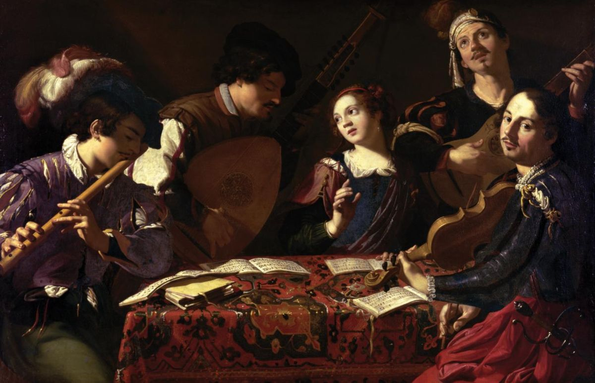

Barok Nedir?
Barok, 17. yüzyılda Avrupa’da ortaya çıkan ve özellikle sanat, mimari, müzik ve edebiyat alanlarında etkili olan bir sanat akımıdır. Rönesans’ın düzenli ve dengeli yapısına tepki olarak doğan Barok, daha duygusal, dramatik ve gösterişli bir anlatımı benimser. Barok sanatta ışık ve gölge kullanımı, hareketli figürler, detay zenginliği ve yoğun bir dinamizm ön plana çıkar. Bu akımda sanatçılar, izleyici üzerinde güçlü bir etki yaratmak amacıyla abartılı kompozisyonlar ve dikkat çekici sahneler oluşturmuşlardır.
Barok mimaride büyük sütunlar, devasa kubbeler, kıvrımlı formlar ve süslemeler sıklıkla kullanılırken; resim sanatında ise genellikle dini temalar işlenmiştir. Caravaggio, Peter Paul Rubens ve Rembrandt gibi sanatçılar Barok dönemin en önemli isimlerindendir. Aynı zamanda Barok müzikte de Johann Sebastian Bach ve Antonio Vivaldi gibi besteciler bu akımın zirve isimlerindendir. Barok, sanatı sadece görsel bir deneyim değil, aynı zamanda duygusal ve ruhsal bir etkileşim haline getirmiştir.
